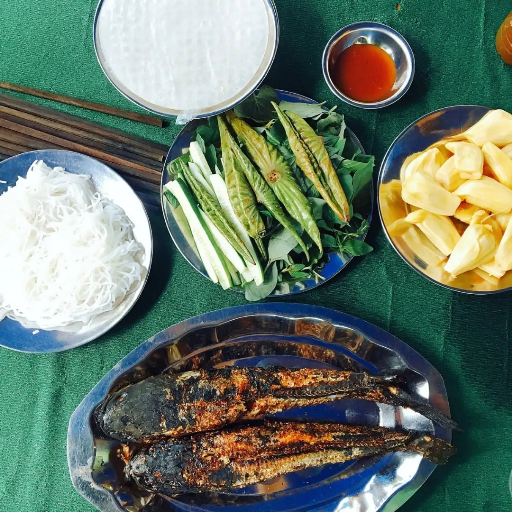

Với diện tích trải rộng ở cả hai bờ sông Tiền, Đồng Tháp nổi tiếng với các cánh đồng lúa trù phú chạy dọc theo những con kênh hiền hòa cùng những cánh rừng nguyên sinh và hồ sen thơm ngát. Không chỉ có thiên nhiên rực rỡ, vùng đất miền Tây Nam Bộ này còn có rất nhiều tọa độ du hí thú vị dành cho hội mê xê dịch. Cùng Tân Trương điểm danh ngay và luôn top 8 địa điểm du lịch Đồng Tháp hấp dẫn nhất nhé!
Làng hoa Sa Đéc là địa điểm check-in ở Đồng Tháp nhất định phải đi trong chuyến vi vu của mọi tín đồ xê dịch. Với diện tích hơn 500ha, đây là một trong các vựa hoa lớn nhất miền Nam và cả Đồng bằng sông Cửu Long. Từ xuất phát điểm là một làng trồng hoa kiểng truyền thống, Sa Đéc hiện nay là “nhà chung” của hơn 1900 hộ dân và hơn 2000 loài hoa - cây cảnh.
Được bao bọc bởi 2 dòng sông Tiền và Sa Đéc đầy ắp phù sa, làng hoa 100 năm tuổi gắn liền với hình ảnh những khóm hoa rực rỡ màu sắc mọc trên giàn, phía dưới là mặt nước từ kênh được dẫn vào. Vì vậy, khi đến làng hoa, bạn sẽ được trải nghiệm lội nước hoặc đi xuồng khám phá vườn.
Cách nội đô Cao Lãnh tầm 30km, Xẻo Quýt là tổ hợp khu di tích lịch sử và điểm du lịch sinh thái nổi tiếng của miền Tây Nam Bộ. Đặt chân đến Xẻo Quýt, bạn sẽ ngỡ ngàng trước vẻ đẹp hoang sơ của thiên nhi6n và khu chiến khu được phục dựng ẩn sâu trong những con rạch dẫn vào cánh rừng nguyên sinh.
Không chỉ có rừng cây và khu di tích, Xẻo Quýt còn là khu bảo tồn với 170 loài thực vật và 200 loài động vật hoang dã, trong đó, nhiều loài được xếp vào Sách đỏ Việt Nam. Với diện tích hơn 50 hecta, bạn nên dành lịch trình 2 ngày 1 đêm để ngày để khám phá Xẻo Quýt cùng các điểm check-in lân cận tại Đồng Tháp.
Xẻo Quýt mùa nào cũng đẹp nhưng lý tưởng nhất vẫn là tháng 9 - tháng 11. Lúc này, Đồng Tháp đang vào mùa nước nổi nên các con rạch, ao hồ đều đầy ắp nước, cây cối xanh tốt và chim muông cũng đang vào mùa gọi bầy nhộn nhịp.

Nhắc đến địa điểm du lịch Đồng Tháp mà không ghé thăm Đồng Sen Tháp Mười thì quá thật rất đáng tiếc. Nằm tại một vùng quê an yên cách nội đô 39km, nơi này có đến 11ha ao hồ trồng sen hồng xen lẫn giữa những cánh đồng lúa mênh mông. Dù bạn đến đây vào lúc nào, thời tiết tại Đồng Sen Tháp Mười cũng trong lành và mát mẻ.
Đến với Đồng Sen Tháp Mười, bạn sẽ có cơ hội trải nghiệm cuộc sống dân dã đậm chất Tây Nam Bộ khi chèo thuyền hái sen, bắt cá hay chụp ảnh cùng đồng sen bát ngát. Đặc biệt, các món ăn làm từ sen tại khu du lịch cũng là một điểm cộng. Bạn nhất định phải thử cơm cuộn sen, gỏi hoa sen, chuột đồng nướng, ốc bươu hấp tiêu ủ hoa sen…
Nếu bạn muốn ngắm hoa sen nở đẹp nhất thì hãy đến đây vào mùa nước nổi (tháng 8 - tháng 11). Lúc này, thời tiết cực mát mẻ và sen nở rộ khắp mọi nơi, “phủ” hồng toàn bộ ao hồ tại đây. Các khách sạn gần Đồng Sen Tháp Mười cũng khá nhiều nên bạn không cần lo lắng về nơi lưu trú nhé.

Nếu bạn yêu thích du lịch thiên nhiên, vườn quốc gia Tràm Chim là tọa độ không thể bỏ qua. Với diện tích hơn 7.000 ha và trải rộng trên địa phận 7 xã, Tràm Chim được xem là bức tranh thu nhỏ của hệ sinh thái vùng Đồng Tháp Mười. Đặc biệt, nơi này nằm trong top 4 khu bảo tồn ngập nước lớn nhất Việt Nam.
Tương tự Xẻo Quýt, vườn quốc gia Tràm Chim đẹp nhất vào mùa nước nổi (tháng 8 - tháng 11). Đây là mùa sen súng bung nở tại các ao hồ và chim vào mùa sinh sản. Thời điểm này cũng phù hợp để bạn tham gia các hoạt động đậm chất miền Tây như chèo thuyền ba lá, bắt chuột đồng, thu hoạch lúa ma và giăng lưới cá.